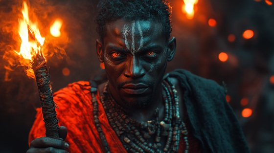

As Shango’s thirst for power grew, so did his willingness to embrace the forbidden arts. In Yoruba oral tradition, some tales say he studied secret sorcery, blending his warrior strength with spiritual domination. This was the turning point — where he became something feared even by the gods.
He performed rituals with thunderstones. He whispered to the dead. He sacrificed not only blood, but law, balance, and the natural order. And as his knowledge deepened, so did the cracks in his soul.
This was the moment the line blurred — where the king began to vanish, and the orisha began to stir within the flesh.
The Sorcerer King
He called the wind, but wanted more,
He opened gates the priests abhorred.
Blood on the altar, spells in flame,
He chanted not — he screamed his name.
The gods withdrew, the dead awoke—
And through his hands, the lightning spoke.
Crowned in fire, bathed in dread,
He walks with spirits, talks to the dead.
The king is no longer flesh alone—
He wears the storm, he shakes the throne.
With ink of ash and sacred bone,
He wrote his fate beneath the stone.
He summoned winds to tear down sky,
And dared the stars to justify.
The drums beat slow, the eyes burned red—
The world obeyed what he had said.
Crowned in fire, bathed in dread,
He walks with spirits, talks to the dead.
The king is no longer flesh alone—
He wears the storm, he shakes the throne.
The line was crossed, the bond was burned,
And whispers grew with each return.
What once was man now split in two—
The god he sought was breaking through.
The thunder came, not from the skies—
But from the fire behind his eyes.
Crowned in fire, bathed in dread,
He walks with spirits, talks to the dead.
The king is no longer flesh alone—
He wears the storm, he shakes the throne.
He drank the dark, he kissed the flame,
He wrote his soul without a name.
And though his crown was forged in light,
He now commands the endless night.
The Sorcerer King is not reborn—
He simply never dies.